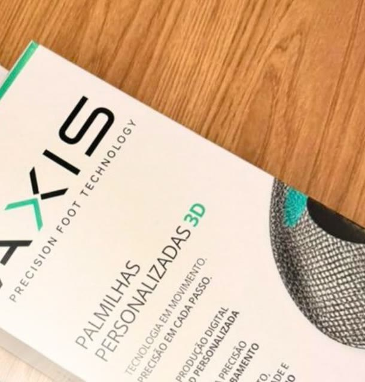
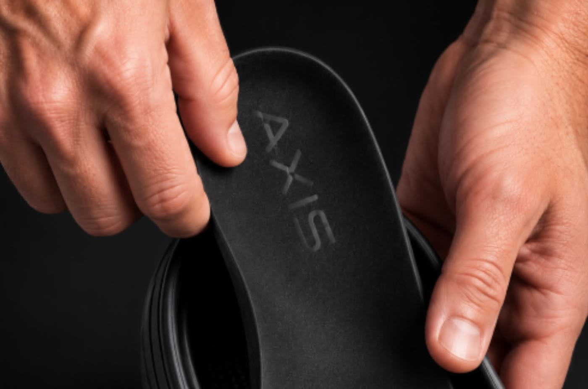
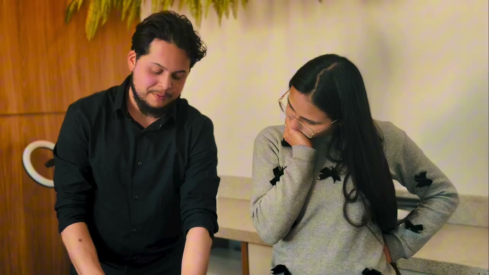
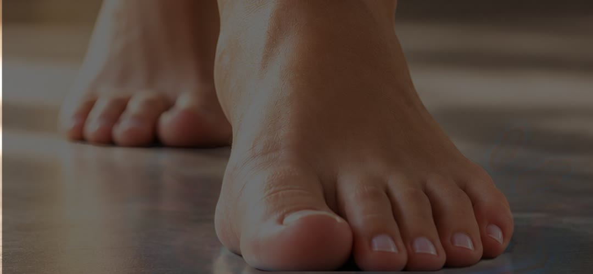
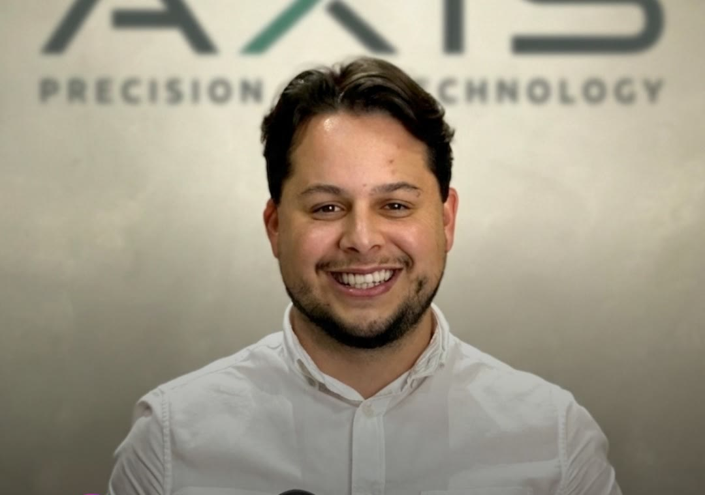

Avaliação
A avaliação fornece os dados.
O profissional observa como a pessoa pisa e se movimenta. Essas informações revelam padrões importantes que orientam o projeto da palmilha.
A AXIS projeta e fabrica palmilhas personalizadas em 3D a partir da avaliação e da indicação do profissional. Cada pessoa é única. Cada necessidade também.
Se toda palmilha personalizada fosse igual, bastaria escolher um modelo e pronto. Na AXIS, cada palmilha nasce de uma avaliação, de um projeto preciso e de uma fabricação individualizada, considerando a forma de pisar, a distribuição das cargas e o comportamento do pé durante o movimento.
Personalizar não é apenas adaptar. É projetar a partir da pessoa.

Uma solução que conecta a expertise clínica do profissional à tecnologia de impressão 3D, para um atendimento mais individualizado.
O profissional observa como a pessoa pisa e se movimenta. Essas informações revelam padrões importantes que orientam o projeto da palmilha.
As informações da avaliação viram um projeto tridimensional, com a palmilha pensada a partir das características e das necessidades de quem vai usar, e não de um modelo único para todos.
A palmilha é impressa em 3D a partir do projeto. Mais precisão entre avaliação, projeto e produção.
A palmilha chega ao profissional para acompanhar a indicação e as necessidades de cada paciente, no calçado da rotina dele.

O Crocs já conquistou espaço na rotina de muita gente por ser prático, leve e confortável. A AXIS desenvolve palmilhas personalizadas em 3D para diferentes tipos de calçados, incluindo Crocs. A personalização começa com a avaliação e a indicação do profissional.
O AXIS PRO é a rede de profissionais que oferecem a palmilha personalizada 3D AXIS aos seus pacientes. Você avalia, indica e acompanha. A AXIS transforma em projeto e fabrica.
Você avalia. A AXIS transforma tecnologia em personalização.AXIS PRO
O 1º curso AXIS de Podoposturologia reuniu três dias de aprendizado intenso, muita prática e troca. Quem participou passou a fazer parte da comunidade AXIS PRO.

Nova turma em breve. Deixe seu contato para saber primeiro.
Quero saber da próxima turmaA palmilha personalizada não é indicada apenas para quem sente dor.
Alterações no apoio dos pés, assimetrias e as exigências de cada atividade física também podem ser consideradas. Por isso, antes de pensar em uma palmilha, é importante entender como seus pés se comportam durante os movimentos.
O corpo funciona em conjunto. A forma como os pés recebem e distribuem carga participa da maneira como você se movimenta no dia a dia.

Seu pé é o ponto de contato entre o corpo e o chão.
Matheus Kulka · fisioterapeuta

Eu queria uma profissão em que pudesse olhar para uma pessoa e não enxergar apenas o lugar onde dói, mas entender toda a história por trás daquela queixa.
Fisioterapeuta com atuação em podoposturologia, Matheus fundou a AXIS para unir a avaliação clínica à tecnologia de impressão 3D e levar a palmilha personalizada a mais profissionais e pacientes.
Não necessariamente. Alterações no apoio dos pés, assimetrias e as exigências de determinadas atividades físicas também podem ser consideradas. Quem define se a palmilha faz sentido para você é a avaliação individual.
Não. O corpo funciona em conjunto e, dependendo do caso, avaliar a pisada pode fazer parte de uma investigação mais completa. Cada caso é avaliado individualmente.
Em três etapas: a avaliação fornece os dados, o projeto 3D transforma essas informações em especificações e a fabricação em impressão 3D produz uma palmilha individualizada.
Sim. A AXIS desenvolve palmilhas personalizadas em 3D para diferentes tipos de calçados, incluindo Crocs.
Fale com a AXIS pelo WhatsApp contando sua área de atuação e sua cidade. A equipe explica como funciona a parceria e a formação em podoposturologia.
Em Guarapuava, na R. Quintino Bocaiúva, 2326, Centro, ou com um profissional credenciado AXIS da sua região. Fale com a gente para saber qual é o mais próximo de você.
AXIS Precision Foot Technology · Guarapuava, PR. A indicação de palmilha personalizada depende de avaliação individual feita por profissional habilitado. * Registro a confirmar antes da publicação.
Prévia criada pela RK Performance